Model Tuning
Comprendre la complexité des modèles, lutter contre l'overfitting grâce à la régularisation, tuner les hyperparamètres avec Grid Search et Random Search, et maîtriser les Support Vector Machines (SVM) avec les Kernel Tricks.
Comprendre la complexité des modèles, lutter contre l'overfitting grâce à la régularisation, tuner les hyperparamètres avec Grid Search et Random Search, et maîtriser les Support Vector Machines (SVM) avec les Kernel Tricks.
📋 Cheatsheet — Model Tuning
Régularisation
from sklearn.linear_model import Ridge, Lasso, ElasticNet
## Ridge (L2) : réduit les coefficients vers 0, ne les annule pas
ridge = Ridge(alpha=0.2).fit(X_train, y_train) # alpha = force de régularisation
ridge.coef_ # coefficients réduits mais non nuls
## Lasso (L1) : annule certains coefficients → sélection de features
lasso = Lasso(alpha=0.2).fit(X_train, y_train) # coefficients non-significatifs → 0
## ElasticNet (L1 + L2) : combine Ridge et Lasso
elastic = ElasticNet(alpha=1, l1_ratio=0.2) # l1_ratio=0 → Ridge, l1_ratio=1 → Lasso
elastic.fit(X_train, y_train)GridSearchCV
from sklearn.model_selection import GridSearchCV, train_test_split
from sklearn.linear_model import ElasticNet
X_train, X_test, y_train, y_test = train_test_split(X, y, test_size=0.2, random_state=1)
model = ElasticNet()
## Grille d'hyperparamètres à tester (toutes les combinaisons)
grid = {
'alpha': [0.01, 0.1, 1], # 3 valeurs
'l1_ratio': [0.2, 0.5, 0.8] # 3 valeurs → 3×3 = 9 combinaisons testées
}
search = GridSearchCV(
model,
grid,
scoring='r2', # métrique de performance à optimiser
cv=5, # 5-fold cross-validation par combinaison
n_jobs=-1 # parallélise sur tous les cœurs disponibles
)
search.fit(X_train, y_train)
search.best_score_ # meilleur score CV → 0.441
search.best_params_ # meilleurs hyperparamètres → {'alpha': 0.01, 'l1_ratio': 0.8}
search.best_estimator_ # modèle entraîné avec les meilleurs paramsRandomizedSearchCV
from sklearn.model_selection import RandomizedSearchCV
from scipy import stats
model = ElasticNet()
## Espace de recherche : distributions de probabilité
grid = {
'alpha': [0.001, 0.01, 0.1, 1], # liste fixe
'l1_ratio': stats.uniform(0, 1) # distribution continue entre 0 et 1
}
search = RandomizedSearchCV(
model,
grid,
scoring='r2',
n_iter=100, # nombre de combinaisons testées (pas toutes, contrairement à GridSearch)
cv=5,
n_jobs=-1
)
search.fit(X_train, y_train)
search.best_estimator_ # → ElasticNet(alpha=0.001, l1_ratio=0.71)Distributions scipy pour RandomizedSearch
from scipy import stats
stats.norm(10, 2) # distribution normale centrée en 10 (meilleure supposition connue)
stats.randint(1, 100) # distribution uniforme discrète [1, 100[ (pas d'idée a priori)
stats.uniform(1, 100) # distribution uniforme continue [1, 101[
stats.loguniform(0.01, 1) # échelle log → idéal pour explorer plusieurs ordres de grandeur
## ex : loguniform(0.01, 1) explore [10⁻², 10⁻¹, 10⁰]SVM — Classification et Régression
from sklearn.svm import SVC, SVR
## Classification SVM (Soft Margin)
svc = SVC(kernel='linear', C=10) # C élevé → marge stricte (moins régularisé)
svc = SVC(kernel='rbf', C=1, gamma=0.1) # RBF kernel (non-linéaire)
svc = SVC(kernel='poly', degree=2, C=1) # kernel polynomial degré 2
## Équivalent SGD
from sklearn.linear_model import SGDClassifier
svc_sgd = SGDClassifier(loss='hinge', penalty='l2', alpha=1/10) # C=10 ↔ alpha=0.1
## Régression SVM
svr = SVR(epsilon=0.1, C=1, kernel='rbf') # epsilon = largeur du tube⚠️ Récapitulatif — Erreurs clés à éviter
Tuner les hyperparamètres sur le test set
❌ Évaluer plusieurs valeurs d'alpha sur le test set et choisir la meilleure → le test set est "contaminé"
✅ Utiliser GridSearchCV avec cross-validation sur le train set uniquement ; garder le test set pour l'évaluation finale
Oublier de scaler avant Ridge, Lasso ou SVM
❌ Régulariser des features non-scalées → les features avec de grandes valeurs sont disproportionnellement pénalisées
✅ Toujours appliquer StandardScaler avant régularisation ou SVM pour traiter équitablement chaque $\beta_i$
Confondre le paramètre C du SVM et alpha de Ridge
❌ Augmenter C pensant que ça régularise davantage → c'est l'inverse : C élevé = marge stricte = moins régularisé
✅ C du SVM est analogue à 1/alpha de Ridge : petit C = forte régularisation (marge souple)
Utiliser une grille trop fine dès le début
❌ alpha = [0.001, 0.002, 0.003, ..., 0.999] sur 1000 valeurs → coûteux, risque d'overfitting des hyperparamètres
✅ Commencer par une recherche grossière sur plusieurs ordres de grandeur (loguniform(0.001, 10)), puis affiner
Augmenter gamma du RBF sans limiter l'overfitting
❌ SVC(kernel='rbf', gamma=100) → le modèle mémorise le train set, frontière très irrégulière
✅ Tuner gamma et C conjointement avec GridSearchCV ; gamma élevé = overfitting
1) Complexité du modèle
1.1 Rappel — Paramètres vs Hyperparamètres
| Définition | Exemples | Déterminé par | |
|---|---|---|---|
| Paramètres $\beta$ | Coefficients du modèle | $\beta_0, \beta_1, \dots$ | .fit() automatiquement |
| Hyperparamètres | Choix de configuration | alpha, C, kernel, n_neighbors | Manuellement |
1.2 Overfitting et Underfitting
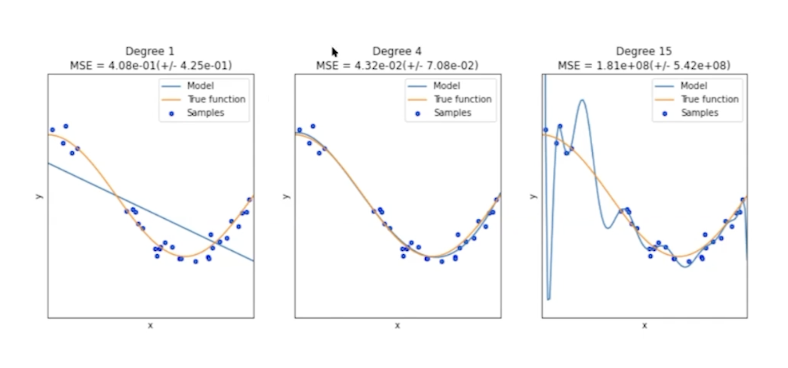
- Underfitting (fort biais) : le modèle ne capture pas toute l'information utile
- Overfitting (forte variance) : le modèle mémorise le bruit, ne généralise pas
1.3 Tradeoff Biais–Variance
$\text{Total Error} = \text{Bias}^2 + \text{Variance} + \text{Irreducible Error}$

L'objectif est de minimiser l'erreur sur le test set → trouver la complexité optimale du modèle.
👉 Great read — Bias-Variance Tradeoff
1.4 Courbes d'apprentissage pour diagnostiquer
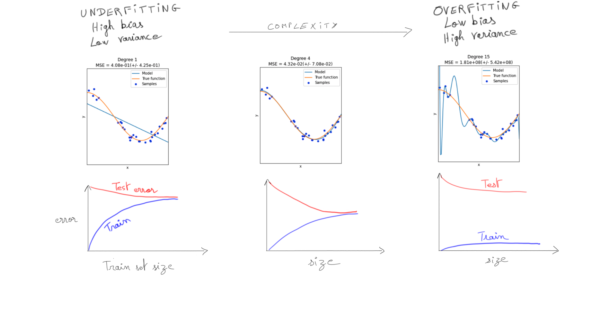
1.5 Solutions à l'overfitting
- Collecter plus d'observations
- Sélection de features (manuelle ou automatisée)
- Réduction de dimensionnalité (Unsupervised Learning)
- Early stopping (Deep Learning)
- Régularisation de la Loss Function
Toujours diagnostiquer avec un validation set (ou cross-validation) — jamais avec le test set.
2) Régularisation
La régularisation ajoute un terme de pénalité à la Loss qui augmente avec $|\beta|$ → force le modèle à réduire ses coefficients.
$\text{Regularized Loss} = \underbrace{L(X, y, \beta)}_{\text{Loss}} + \underbrace{\text{Penalty}(\beta)}_{\text{régularisation}}$
- Pénalise les grandes valeurs de $\beta_i$
- Force le modèle à sélectionner moins de features ou à réduire leur impact
- Prévient l'overfitting
2.1 Ridge (L2)
$\text{Ridge}(X, y, \beta) = \sum_{i=0}^{n-1}(y_i - \hat{y}_i)^2 + \alpha \sum_{j=1}^{p} \beta_j^2$
- Réduit tous les coefficients vers 0 sans jamais les annuler complètement
- Utile quand on pense que toutes les features ont un impact
2.2 Lasso (L1)
$\text{Lasso}(X, y, \beta) = \sum_{i=0}^{n-1}(y_i - \hat{y}_i)^2 + \alpha \sum_{j=1}^{p} |\beta_j|$
- Peut annuler certains coefficients exactement à 0 → sélection naturelle de features
- Idéal pour l'interprétabilité
Important : on régularise $\beta_1, \dots, \beta_p$ mais jamais $\beta_0$ (l'intercept n'est associé à aucune feature).
2.3 ElasticNet (L1 + L2)
$L = \|y - \hat{y}\|^2 + \alpha\left(\lambda|\beta| + (1-\lambda)\|\beta\|^2\right)$
Deux hyperparamètres : alpha (force totale) et l1_ratio (équilibre L1/L2).
from sklearn.linear_model import ElasticNet
model = ElasticNet(alpha=1, l1_ratio=0.2) # l1_ratio=0 → Ridge pur, l1_ratio=1 → Lasso pur2.4 Comparaison Ridge vs Lasso en pratique
from sklearn.linear_model import Ridge, Lasso, LinearRegression
linreg = LinearRegression().fit(X, y) # OLS sans régularisation
ridge = Ridge(alpha=0.2).fit(X, y) # réduit tous les coefs
lasso = Lasso(alpha=0.2).fit(X, y) # annule les coefs non-significatifs
## Comparer les coefficients
coefs = pd.DataFrame({
"coef_linreg": pd.Series(linreg.coef_, index=X.columns),
"coef_ridge": pd.Series(ridge.coef_, index=X.columns),
"coef_lasso": pd.Series(lasso.coef_, index=X.columns)
})## Output (entiers) — les 0 sont en rouge dans Lasso
## coef_linreg coef_ridge coef_lasso
## age -10 7 0 ← Lasso → 0 (p-value 86%)
## bmi 519 457 511 ← gardé (significatif)
## s1 -792 -48 0 ← Lasso → 0 (p-value 5%)| Ridge | Lasso | |
|---|---|---|
| Effet de $\alpha$ croissant | Réduit vers 0 | Annule à 0 (feature selection) |
| Interprétabilité | Moins bonne | Meilleure |
| Colinéarité | Gère bien | Garde 1 feature parmi colinéaires |
Quand régulariser ?
- Ridge → quand toutes les features ont potentiellement un impact
- Lasso → quand on veut de la sélection de features et de l'interprétabilité
- Régularisation presque toujours bénéfique — Ridge est souvent activé par défaut dans sklearn
2.5 P-values et régularisation
import statsmodels.api as sm
ols = sm.OLS(y, sm.add_constant(X)).fit()
ols.summary() # P>|t| → features avec p-value élevée seront pénalisées par LassoLa régularisation tend à pénaliser les features statistiquement non significatives (p-value élevée).
3) Model Tuning — Grid Search & Random Search
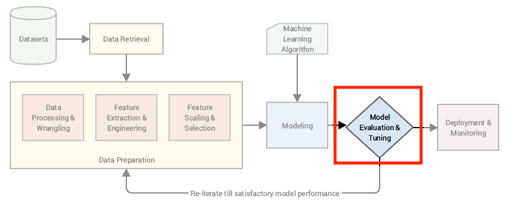
Distinction fondamentale :
- FIT = trouver les meilleurs PARAMÈTRES qui minimisent la LOSS
- FINE-TUNE = trouver les meilleurs HYPERPARAMÈTRES qui maximisent les MÉTRIQUES DE PERFORMANCE
3.1 Grid Search manuel
import itertools
from sklearn.model_selection import cross_val_score
from sklearn.linear_model import ElasticNet
alphas = [0.01, 0.1, 1]
l1_ratios = [0.2, 0.5, 0.8]
for alpha, l1_ratio in itertools.product(alphas, l1_ratios): # toutes les combinaisons
model = ElasticNet(alpha=alpha, l1_ratio=l1_ratio)
r2 = cross_val_score(model, X_train, y_train, cv=5).mean()
print(f"alpha: {alpha}, l1_ratio: {l1_ratio}, r2: {r2:.3f}")## Output
## alpha: 0.01, l1_ratio: 0.2, r2: 0.310
## alpha: 0.01, l1_ratio: 0.8, r2: 0.442 ← meilleur
## alpha: 1, l1_ratio: 0.2, r2: -0.0213.2 GridSearchCV

from sklearn.model_selection import GridSearchCV
X_train, X_test, y_train, y_test = train_test_split(X, y, test_size=0.2, random_state=1)
model = ElasticNet()
grid = {'alpha': [0.01, 0.1, 1], 'l1_ratio': [0.2, 0.5, 0.8]}
search = GridSearchCV(
model,
grid,
scoring='r2', # métrique à maximiser
cv=5, # k-fold CV pour chaque combinaison
n_jobs=-1 # parallélisation sur tous les cœurs
)
search.fit(X_train, y_train)
search.best_score_ # → 0.441
search.best_params_ # → {'alpha': 0.01, 'l1_ratio': 0.8}
search.best_estimator_ # → ElasticNet(alpha=0.01, l1_ratio=0.8)👉 sklearn.model_selection.GridSearchCV
Limites du Grid Search :
- Coûteux computationnellement (toutes les combinaisons)
- Peut rater la valeur optimale si la grille est trop grossière
- Risque d'overfitting des hyperparamètres sur un petit dataset
3.3 RandomizedSearchCV
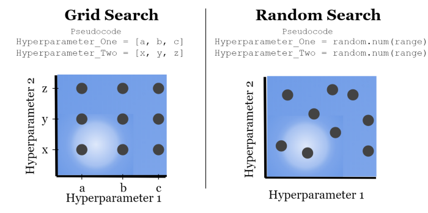
from sklearn.model_selection import RandomizedSearchCV
from scipy import stats
model = ElasticNet()
grid = {
'alpha': [0.001, 0.01, 0.1, 1], # liste discrète
'l1_ratio': stats.uniform(0, 1) # distribution continue → échantillonnage aléatoire
}
search = RandomizedSearchCV(
model,
grid,
scoring='r2',
n_iter=100, # nombre de combinaisons à tester (pas toutes)
cv=5,
n_jobs=-1
)
search.fit(X_train, y_train)
search.best_estimator_ # → ElasticNet(alpha=0.001, l1_ratio=0.710)3.4 Choisir la bonne distribution scipy
from scipy import stats
stats.norm(10, 2) # distribution normale — si on a une supposition a priori (centre=10)
stats.randint(1, 100) # uniforme discrète — aucune idée, valeurs entières
stats.uniform(1, 100) # uniforme continue — aucune idée, valeurs continues
stats.loguniform(0.01, 1) # log-uniforme — exploration sur plusieurs ordres de grandeur
## loguniform(0.01, 1) → explore [10⁻², 10⁻¹, 10⁰]
r = stats.loguniform(0.01, 1).rvs(size=1000) # tire 1000 valeurs aléatoires[Untitled](Model%20Tuning/Untitled%2032d4e41082468053ad5aee8830064ed4.csv)
3.5 Grid Search vs Random Search
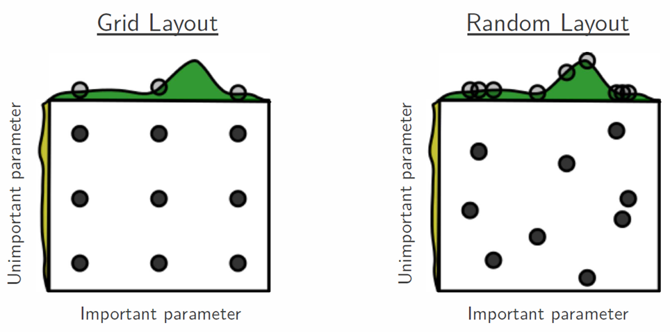
| Grid Search | Random Search | |
|---|---|---|
| Combinaisons testées | Toutes | Échantillon aléatoire (n_iter) |
| Coût | Élevé si grille grande | Contrôlé par n_iter |
| Avantage | Exhaustif | Utile quand certains hyperparamètres sont moins importants |
| Syntaxe | Plus verbeuse | Plus flexible (distributions continues) |
Bonne pratique : toujours commencer par une recherche grossière (loguniform, large plage), puis affiner autour des meilleures valeurs trouvées.
4) Support Vector Machines (SVM)
4.1 Frontière de décision optimale
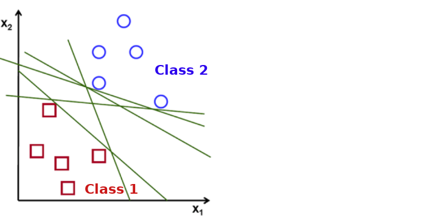
Il existe une infinité de frontières de décision qui séparent les classes. Le SVM choisit celle qui maximise la marge entre les classes.
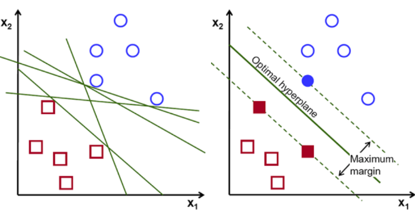
- Les points sur la frontière de la marge sont les support vectors
- La frontière qui maximise la marge est le Maximum Margin Classifier
- Problème d'optimisation convexe → solution unique garantie
4.2 Soft Margin Classifier
Le Maximum Margin pur est très sensible aux outliers. Pour mieux généraliser, on autorise quelques points à être à l'intérieur ou du mauvais côté de la marge, avec une pénalité.
La Hinge Loss pénalise chaque point mal classé proportionnellement à sa distance dans la marge (pénalité linéaire, comme MAE).
[Untitled](Model%20Tuning/Untitled%2032d4e410824680ffb16de302705a2f69.csv)
4.3 Hyperparamètre C
C contrôle la force de la pénalité appliquée aux points mal classés.
C | Effet | Analogie Ridge |
|---|---|---|
| Élevé ($C to infty$) | Marge stricte, Maximum Margin | Petit alpha (peu régularisé) |
| Faible | Marge souple, tolérant aux erreurs | Grand alpha (très régularisé) |
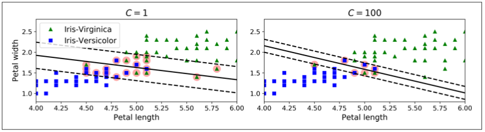
from sklearn.svm import SVC
svc = SVC(kernel='linear', C=10) # C=10 → marge stricte
## Équivalent avec SGDClassifier (solver SGD)
from sklearn.linear_model import SGDClassifier
svc_sgd = SGDClassifier(loss='hinge', penalty='l2', alpha=1/10) # alpha = 1/CToujours scaler les features avant d'utiliser un SVM — le modèle est basé sur les distances.
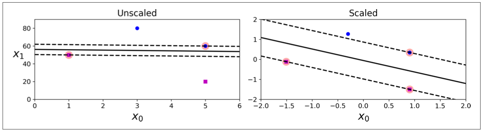
4.4 SVM Régresseur (bonus)
Le SVR inverse l'objectif : au lieu de séparer deux classes, il cherche à faire passer autant de points que possible à l'intérieur du tube.
from sklearn.svm import SVR
regressor = SVR(
epsilon=0.1, # demi-largeur du tube (points dans le tube ne génèrent pas de pénalité)
C=1, # force de régularisation
kernel='linear' # ou 'rbf', 'poly'
)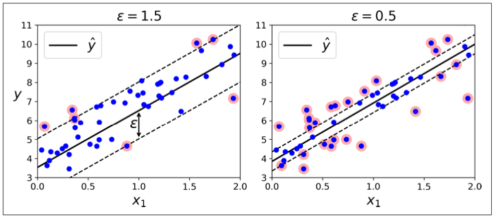
5) Kernel Tricks
5.1 Problème : données non-linéairement séparables
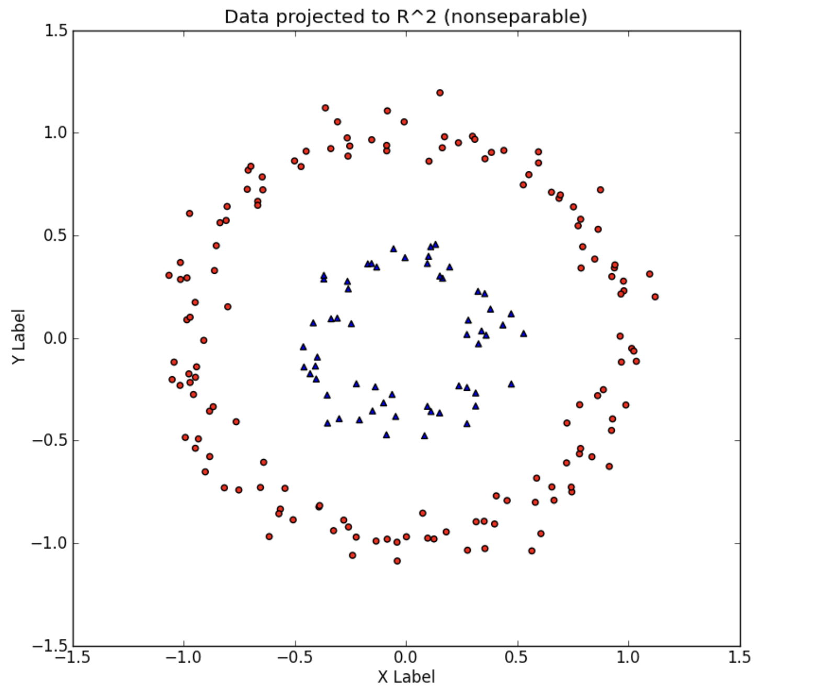
Solution : ajouter une feature transformée pour rendre les données linéairement séparables dans un espace de dimension supérieure.
$\phi\left(\begin{bmatrix}x_1 \\ x_2\end{bmatrix}\right) = \begin{bmatrix}x_1 \\ x_2 \\ x_1^2 + x_2^2\end{bmatrix}$
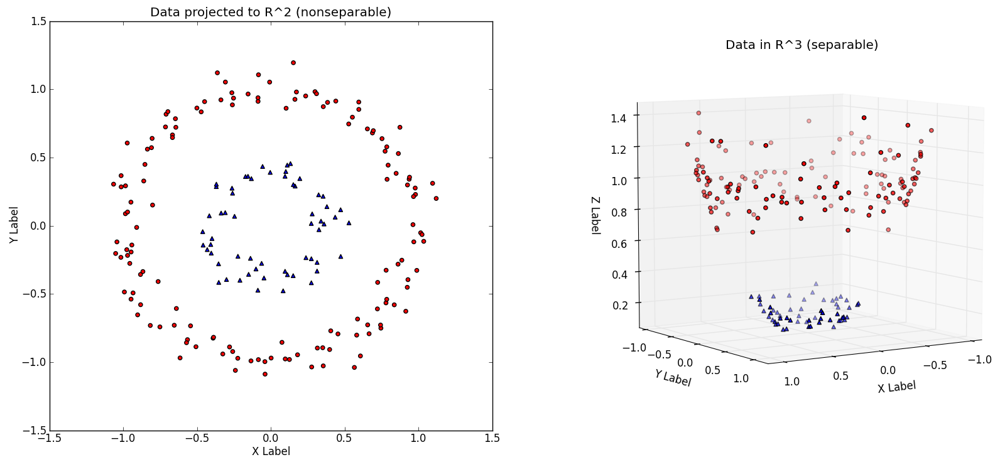
Problème : augmenter la dimensionnalité est computationnellement très coûteux.
5.2 Le Kernel Trick
Plutôt que de créer explicitement les nouvelles features, le Kernel Trick calcule une similarité $K(a, b)$ entre paires de points pour simuler le feature mapping — sans jamais calculer $\phi(x)$ explicitement.
$\text{Deux points très similaires} \Rightarrow \text{classés pareillement}$
👉 Kernels expliqués (avec les maths)
5.3 Kernels disponibles
SVC(kernel='linear') # frontière linéaire — K(a,b) = aᵀb
SVC(kernel='poly', degree=2, C=1) # frontière polynomiale — K(a,b) = (aᵀb + c)^d
SVC(kernel='rbf', gamma=0.1, C=1)# Gaussian RBF — K(a,b) = exp(-γ||a-b||²)
SVC(kernel='sigmoid', gamma=0.1) # sigmoïde| Kernel | Formule | Cas d'usage |
|---|---|---|
linear | $K(a,b) = a^Tb$ | Données linéairement séparables |
poly (degré $d$) | $K(a,b) = (a^Tb + c)^d$ | Relations polynomiales |
rbf (Gaussian) | $K(a,b) = e^{-gamma\ | a-b\ |
sigmoid | similaire à réseau de neurones | Moins courant |
5.4 Hyperparamètre gamma (RBF)
$\gamma$ contrôle le rayon d'influence de chaque point :
- Petit $\gamma$ → chaque point influence une large zone → frontière lisse → risque d'underfitting
- Grand $\gamma$ → chaque point n'influence que son voisinage immédiat → frontière très irrégulière → risque d'overfitting
Toujours tuner C et gamma ensemble via GridSearchCV pour le kernel RBF.
search = GridSearchCV(
SVC(kernel='rbf'),
{'C': [0.1, 1, 10, 100], 'gamma': [0.001, 0.01, 0.1, 1]},
scoring='accuracy', cv=5
)Régression polynomiale avec SVR :
regressor = SVR(epsilon=0.1, C=1, kernel='poly', degree=2)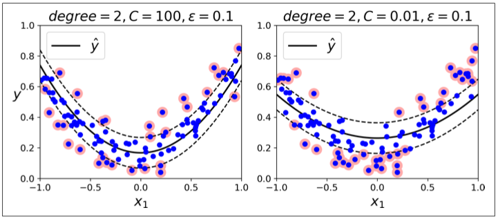
📚 Bibliographie
👉 sklearn.linear_model.ElasticNet
👉 sklearn.model_selection.GridSearchCV
👉 sklearn.model_selection.RandomizedSearchCV
👉 Kernels explained — xavierbourretsicotte.github.io
👉 SVM vs Logistic Regression (math)
🧭 Introduction
Quand on construit un modèle de machine learning, on ajuste deux types de choses bien distinctes :
- Les paramètres (les coefficients $\beta$) : le modèle les trouve tout seul pendant
.fit(). - Les hyperparamètres : ce sont des réglages manuels qu'on choisit avant l'entraînement — comme la puissance de la régularisation ou le type de noyau d'un SVM.
Ce cours couvre quatre grandes idées :
- Overfitting / Underfitting — pourquoi un modèle peut trop bien apprendre... et du coup mal généraliser.
- Régularisation L1 / L2 — un mécanisme pour "freiner" les modèles trop gourmands.
- Grid Search / Random Search — des méthodes automatiques pour trouver les meilleurs hyperparamètres.
- Support Vector Machines (SVM) — un autre type de modèle qui maximise la "marge" entre les classes.
A retenir
- Un modèle qui performe très bien sur le train set mais mal sur le test set souffre d'overfitting.
- La régularisation ajoute une pénalité sur les grands coefficients pour éviter l'overfitting.
- Ridge (L2) réduit les coefficients sans jamais les annuler. Lasso (L1) peut les mettre à zéro.
GridSearchCVteste toutes les combinaisons d'hyperparamètres.RandomizedSearchCVen teste un sous-ensemble aléatoire, plus rapide.- Toujours scaler les données avant Ridge, Lasso ou SVM.
L'analogie fil rouge : régler une radio
Imaginez un poste de radio analogique. Vous avez une molette de fréquence (le paramètre principal) que la radio règle automatiquement pour capter le signal. Mais vous avez aussi des réglages manuels — basses, aigus, volume — que vous devez choisir. Si vous poussez trop les basses, le son est distordu (overfitting). Si vous les coupez trop, vous perdez de la profondeur (underfitting). La régularisation, c'est apprendre à trouver le bon équilibre. Et Grid Search, c'est comme tester toutes les combinaisons de basses/aigus/volume pour trouver le son parfait.
Mini-plan du cours
- Complexité du modèle : biais, variance, overfitting
- Régularisation : Ridge, Lasso, ElasticNet
- Tuning des hyperparamètres : GridSearchCV, RandomizedSearchCV
- Support Vector Machines (SVM)
- Kernel Tricks
1. Complexité du modèle
Paramètres vs Hyperparamètres
Avant tout, clarifieons deux mots qui se ressemblent mais ne jouent pas le même rôle.
| Définition | Exemples | Qui les fixe ? | |
|---|---|---|---|
| Paramètres $\beta$ | Les coefficients appris par le modèle | $\beta_0, \beta_1, \dots$ | .fit() automatiquement |
| Hyperparamètres | Les réglages de configuration | alpha, C, kernel, n_neighbors | Vous, manuellement |
Exemple concret : dans une régression linéaire, les coefficients (pente, intercept) sont des paramètres. Mais si vous utilisez Ridge, le paramètre alpha qui contrôle la force de la régularisation est un hyperparamètre — vous devez le choisir vous-même.
Overfitting et Underfitting
Underfitting (fort biais) : le modèle est trop simple. Il ne capte pas les relations importantes dans les données. Il se trompe autant sur le train set que sur le test set.
Overfitting (forte variance) : le modèle est trop complexe. Il a "mémorisé" les données d'entraînement, y compris le bruit. Il performe très bien sur le train set, mais échoue sur de nouvelles données.
Analogie : un élève qui révise trop mécaniquement les questions d'entraînement sans comprendre le fond — il réussit les exercices connus mais plante à l'examen si les questions changent un peu.
Le tradeoff Biais–Variance
L'erreur totale d'un modèle se décompose ainsi :
- Biais : erreur due à des hypothèses trop simplistes (underfitting).
- Variance : erreur due à une trop grande sensibilité aux fluctuations du train set (overfitting).
- Erreur irréductible : bruit fondamental des données, qu'aucun modèle ne peut éliminer.
L'objectif est de minimiser l'erreur sur le test set — c'est-à-dire trouver la complexité optimale qui équilibre biais et variance.
Plus on augmente la complexité d'un modèle (plus de features, plus de degrés), on réduit le biais mais on augmente la variance. Il faut trouver le juste milieu.
Diagnostiquer avec les courbes d'apprentissage
Pour savoir si votre modèle souffre d'overfitting ou d'underfitting, on trace les scores sur le train set et le validation set en fonction de la taille des données ou de la complexité du modèle.
- Si les deux courbes convergent à un score bas → underfitting → modèle trop simple.
- Si la courbe du train set est bien au-dessus de celle du validation set → overfitting → modèle trop complexe.
Solutions à l'overfitting
- Collecter plus de données
- Réduire le nombre de features
- Utiliser la régularisation (technique principale couverte dans ce cours)
Diagnostiquez toujours l'overfitting avec un validation set (ou la cross-validation), jamais avec le test set. Le test set est sacré — il sert uniquement à l'évaluation finale.
2. Régularisation
Le principe général
La régularisation consiste à ajouter un terme de pénalité à la fonction de coût (la Loss). Ce terme punit les modèles qui ont de grands coefficients.
Pourquoi ça marche ? Si les coefficients sont trop grands, le modèle sur-réagit à chaque feature. En ajoutant une pénalité sur leur taille, on force le modèle à rester "sobre" — à ne garder que ce qui est vraiment utile.
On ne régularise jamais l'intercept $\beta_0$, car il n'est associé à aucune feature. Seuls $\beta_1, \beta_2, \dots, \beta_p$ sont pénalisés.
Ridge — Régularisation L2
Ridge ajoute la somme des carrés des coefficients à la Loss :
Traduction mot à mot :
- $\sum_{i=0}^{n-1}(y_i - \hat{y}_i)^2$ : la Loss habituelle (MSE) — on mesure l'erreur de prédiction.
- $\alpha$ : la force de la régularisation — plus $\alpha$ est grand, plus on pénalise les gros coefficients.
- $\sum_{j=1}^{p} \beta_j^2$ : la somme des carrés des coefficients — la "taille" du modèle.
Intuition : pénaliser $\beta_j^2$ plutôt que $|\beta_j|$ signifie que les très grands coefficients sont punis de manière disproportionnée (un coefficient de 10 est pénalisé 100 fois, pas 10 fois). Ridge pousse tous les coefficients vers 0 mais ne les annule jamais complètement.
Exemple numérique : sans Ridge, un modèle peut avoir $\beta_1 = 500$. Avec Ridge ($\alpha = 0.2$), ce coefficient pourrait descendre à $\beta_1 = 457$ — réduit mais pas nul.
from sklearn.linear_model import Ridge
# alpha contrôle la force de la pénalité
# plus alpha est grand, plus les coefficients sont réduits
ridge = Ridge(alpha=0.2).fit(X_train, y_train)
# Les coefficients sont réduits mais jamais exactement à 0
print(ridge.coef_)Lasso — Régularisation L1
Lasso ajoute la somme des valeurs absolues des coefficients :
Différence clé avec Ridge : Lasso peut annuler certains coefficients exactement à 0. C'est une forme de sélection automatique de features : les variables peu importantes disparaissent du modèle.
Pourquoi les coefficients tombent à 0 avec L1 et pas L2 ? La pénalité L1 (valeur absolue) crée géométriquement des "coins" dans l'espace d'optimisation — et les solutions optimales tombent souvent dans ces coins, où les coefficients sont nuls. L2 (carré) crée une ellipse lisse sans coins, donc les coefficients ne s'annulent jamais exactement.
Exemple numérique : reprenons le même modèle. Avec Lasso ($\alpha = 0.2$) :
age($\beta = -10$ sans régularisation, p-value de 86%) → Lasso le met à 0 (la feature est éliminée)bmi($\beta = 519$, très significatif) → Lasso le garde à $511$ (légèrement réduit)
from sklearn.linear_model import Lasso
# alpha : force de la pénalité L1
lasso = Lasso(alpha=0.2).fit(X_train, y_train)
# Certains coefficients sont exactement 0 → feature éliminée
print(lasso.coef_)
# Exemple de sortie :
# age: 0.0 ← éliminé par Lasso
# bmi: 511 ← gardé (feature importante)
# s1: 0.0 ← éliminé par LassoComparaison Ridge vs Lasso
from sklearn.linear_model import Ridge, Lasso, LinearRegression
import pandas as pd
# Trois modèles pour comparer les effets
linreg = LinearRegression().fit(X, y) # sans régularisation
ridge = Ridge(alpha=0.2).fit(X, y) # L2 : réduit sans annuler
lasso = Lasso(alpha=0.2).fit(X, y) # L1 : peut annuler à 0
# Tableau comparatif des coefficients
coefs = pd.DataFrame({
"coef_linreg": pd.Series(linreg.coef_, index=X.columns), # valeurs de référence
"coef_ridge": pd.Series(ridge.coef_, index=X.columns), # réduits vers 0
"coef_lasso": pd.Series(lasso.coef_, index=X.columns) # certains à 0
})
print(coefs)
# Exemple de sortie :
# coef_linreg coef_ridge coef_lasso
# age -10 7 0 ← Lasso annule (p-value 86%)
# bmi 519 457 511 ← gardé (très significatif)
# s1 -792 -48 0 ← Lasso annule (p-value 5%)| Ridge | Lasso | |
|---|---|---|
| Effet quand $\alpha$ augmente | Réduit les coefficients vers 0 | Annule certains coefficients à 0 |
| Sélection de features | Non | Oui (automatique) |
| Interprétabilité | Moins bonne | Meilleure |
| Gestion des variables corrélées | Distribue l'effet | Garde une seule variable |
Quand utiliser lequel ?
- Ridge → quand vous pensez que toutes vos features ont un impact, même petit.
- Lasso → quand vous avez beaucoup de features et voulez ne garder que les importantes.
- En cas de doute : essayez les deux et comparez avec cross-validation.
ElasticNet — Le meilleur des deux mondes (L1 + L2)
ElasticNet combine Ridge et Lasso. Sa Loss est :
Deux hyperparamètres à régler :
alpha: la force totale de la régularisation.l1_ratio($\lambda$) : l'équilibre entre L1 et L2.l1_ratio=0→ pur Ridge,l1_ratio=1→ pur Lasso.
from sklearn.linear_model import ElasticNet
# l1_ratio=0.2 : 20% Lasso, 80% Ridge
# alpha=1 : régularisation forte
elastic = ElasticNet(alpha=1, l1_ratio=0.2)
elastic.fit(X_train, y_train)ElasticNet est souvent un bon choix par défaut quand on ne sait pas si Ridge ou Lasso est plus adapté. On règle ensuite alpha et l1_ratio via GridSearch.
P-values et régularisation : un lien intuitif
Les features avec des p-values élevées (statistiquement non significatives) ont tendance à être pénalisées davantage par la régularisation — Lasso les annule, Ridge les réduit fortement. La régularisation fait donc quelque chose de similaire aux tests statistiques, mais de manière automatique.
3. Tuning des Hyperparamètres
La distinction fondamentale
- FIT = trouver les meilleurs PARAMÈTRES $\beta$ qui minimisent la LOSS → c'est .fit().
- FINE-TUNE = trouver les meilleurs HYPERPARAMÈTRES qui maximisent une MÉTRIQUE (R², accuracy…) → c'est le grid search.
Règle d'or : on ne touche jamais au test set pour choisir les hyperparamètres. On utilise la cross-validation sur le train set uniquement.
Analogie : vous préparez un plat pour un jury. Vous goûtez et ajustez la recette (hyperparamètres) avec vos propres tests (validation set). Vous ne servez le jury (test set) qu'une seule fois, à la fin. Si vous goûtez en regardant la réaction du jury à chaque ajustement, votre évaluation finale n'est plus fiable.
Grid Search manuel — pour comprendre le principe
Avant d'utiliser la fonction automatique, voici ce que fait un grid search "à la main" :
import itertools
from sklearn.model_selection import cross_val_score
from sklearn.linear_model import ElasticNet
# On définit les valeurs à tester pour chaque hyperparamètre
alphas = [0.01, 0.1, 1]
l1_ratios = [0.2, 0.5, 0.8]
# itertools.product génère TOUTES les combinaisons possibles : 3×3 = 9
for alpha, l1_ratio in itertools.product(alphas, l1_ratios):
model = ElasticNet(alpha=alpha, l1_ratio=l1_ratio)
# cross_val_score évalue chaque combinaison sur 5 folds
r2 = cross_val_score(model, X_train, y_train, cv=5).mean()
print(f"alpha: {alpha}, l1_ratio: {l1_ratio}, r2: {r2:.3f}")
# Sortie (exemple) :
# alpha: 0.01, l1_ratio: 0.2, r2: 0.310
# alpha: 0.01, l1_ratio: 0.8, r2: 0.442 ← meilleure combinaison
# alpha: 1, l1_ratio: 0.2, r2: -0.021Ce code fonctionne, mais il faut gérer manuellement le suivi des résultats. C'est pour ça que sklearn offre GridSearchCV.
GridSearchCV — La version automatique et optimisée
GridSearchCV fait exactement la même chose que la boucle ci-dessus, mais :
- Gère automatiquement tous les résultats
- Parallélise les calculs (
n_jobs=-1) - Expose directement les meilleurs paramètres et le meilleur modèle
from sklearn.model_selection import GridSearchCV, train_test_split
from sklearn.linear_model import ElasticNet
# Séparation train/test — on ne touche à X_test qu'à la toute fin
X_train, X_test, y_train, y_test = train_test_split(X, y, test_size=0.2, random_state=1)
model = ElasticNet()
# Dictionnaire des hyperparamètres à tester
# GridSearch va tester TOUTES les combinaisons : 3×3 = 9
grid = {
'alpha': [0.01, 0.1, 1], # 3 valeurs pour alpha
'l1_ratio': [0.2, 0.5, 0.8] # 3 valeurs pour l1_ratio
}
search = GridSearchCV(
model, # le modèle à optimiser
grid, # la grille d'hyperparamètres
scoring='r2', # la métrique à maximiser
cv=5, # 5-fold cross-validation pour chaque combinaison
n_jobs=-1 # utilise tous les cœurs disponibles en parallèle
)
# On entraîne uniquement sur X_train
search.fit(X_train, y_train)
# Résultats
print(search.best_score_) # meilleur score CV moyen → ex : 0.441
print(search.best_params_) # {'alpha': 0.01, 'l1_ratio': 0.8}
print(search.best_estimator_) # le modèle déjà entraîné avec les meilleurs paramsCe que fait GridSearchCV en détail :
Pour chaque combinaison (ici 9), il entraîne le modèle 5 fois (cv=5) sur des folds différents et calcule le score moyen. Il choisit la combinaison avec le meilleur score moyen.
9 combinaisons × 5 folds = 45 entraînements au total.
search.best_score_ est le score moyen sur la cross-validation, pas sur le test set. C'est normal : le test set ne sert qu'à l'évaluation finale, après avoir choisi les hyperparamètres.
Limites du Grid Search :
- Si on a beaucoup d'hyperparamètres et beaucoup de valeurs, le nombre de combinaisons explose (3 hyperparamètres avec 10 valeurs chacun = 1 000 combinaisons × 5 folds = 5 000 entraînements).
- On peut "suroptimiser" les hyperparamètres si le dataset est petit.
RandomizedSearchCV — Quand la grille est trop grande
Au lieu de tester toutes les combinaisons, RandomizedSearchCV en tire un nombre fixé (n_iter) au hasard. C'est souvent suffisant pour trouver de bonnes valeurs, et beaucoup plus rapide.
Avantage supplémentaire : on peut utiliser des distributions continues (pas seulement des listes discrètes) pour explorer l'espace des hyperparamètres de manière plus fine.
from sklearn.model_selection import RandomizedSearchCV
from scipy import stats
model = ElasticNet()
grid = {
'alpha': [0.001, 0.01, 0.1, 1], # liste discrète de 4 valeurs
'l1_ratio': stats.uniform(0, 1) # distribution continue : n'importe quelle valeur entre 0 et 1
}
search = RandomizedSearchCV(
model,
grid,
scoring='r2',
n_iter=100, # on teste seulement 100 combinaisons (choisies aléatoirement)
cv=5,
n_jobs=-1
)
search.fit(X_train, y_train)
# Le modèle optimal trouvé parmi les 100 combinaisons testées
print(search.best_estimator_)
# → ElasticNet(alpha=0.001, l1_ratio=0.710)Choisir la bonne distribution scipy
La distribution qu'on donne à RandomizedSearchCV pour chaque hyperparamètre détermine comment les valeurs sont échantillonnées :
from scipy import stats
# Distribution normale — si vous avez une bonne intuition de la valeur centrale
# Ex : "je pense que alpha est autour de 10"
stats.norm(10, 2)
# Uniforme discrète — aucune idée a priori, valeurs entières
# Ex : "n_neighbors entre 1 et 100"
stats.randint(1, 100)
# Uniforme continue — aucune idée a priori, valeurs continues
stats.uniform(1, 100)
# Log-uniforme — pour explorer plusieurs ordres de grandeur en même temps
# loguniform(0.01, 1) explore à la fois 0.01, 0.1 et 1 de façon équilibrée
# Idéal pour alpha ou C qui peuvent varier de 0.001 à 1000
stats.loguniform(0.01, 1)Pourquoi log-uniforme ? Pour un hyperparamètre comme alpha qui peut valoir 0.001, 0.01, 0.1 ou 1, une distribution uniforme entre 0.001 et 1 échantillonnerait presque uniquement des valeurs proches de 1. La distribution log-uniforme équilibre l'exploration entre les ordres de grandeur.
Grid Search vs Random Search : le résumé
| Grid Search | Random Search | |
|---|---|---|
| Combinaisons testées | Toutes (exhaustif) | Sous-ensemble aléatoire (n_iter) |
| Coût computationnel | Élevé si grille grande | Contrôlable via n_iter |
| Distributions continues | Non (listes uniquement) | Oui (distributions scipy) |
| Quand l'utiliser | Petite grille, peu d'hyperparamètres | Grande grille, hyperparamètres continus |
Bonne pratique : commencez par une recherche grossière sur de grandes plages (ex : loguniform(0.001, 100)), puis affinez autour des meilleures valeurs trouvées. Ne commencez pas avec une grille très fine dès le départ.
4. Support Vector Machines (SVM)
L'idée centrale : maximiser la marge
Un SVM est un modèle de classification qui cherche à trouver la meilleure frontière de décision entre deux classes. "Meilleure" signifie : celle qui maximise la marge — la distance entre la frontière et les points les plus proches de chaque classe.
Analogie : si vous devez tracer une ligne entre deux groupes de points sur une feuille, vous allez instinctivement la placer le plus loin possible des deux groupes, pour avoir une "marge de sécurité". C'est exactement ce que fait le SVM.
Les points situés exactement sur le bord de la marge s'appellent les support vectors — ce sont les seuls points qui "comptent" pour définir la frontière.
Propriété importante : le problème de maximisation de la marge est un problème d'optimisation convexe → il a une solution unique et garantie.
Soft Margin Classifier — Accepter quelques erreurs
Dans la vraie vie, les données ne sont pas parfaitement séparables. Le SVM "marge stricte" est trop sensible aux outliers. La solution : le Soft Margin Classifier autorise quelques points à être du mauvais côté de la marge, avec une pénalité.
La pénalité utilisée est la Hinge Loss : chaque point mal classé est pénalisé proportionnellement à sa distance dans la marge (pénalité linéaire, comme le MAE).
L'hyperparamètre C : la tolérance aux erreurs
C contrôle à quel point on pénalise les points mal classés.
C | Effet | Analogie |
|---|---|---|
| Grand $C$ (vers $\infty$) | Marge stricte, peu d'erreurs tolérées | Peu régularisé, risque d'overfitting |
| Petit $C$ | Marge souple, plus d'erreurs tolérées | Fortement régularisé |
Important : C est l'inverse d'alpha dans Ridge. Grand C = peu de régularisation. Petit C = beaucoup de régularisation.
from sklearn.svm import SVC
# C=10 : marge stricte, peu de tolérance aux erreurs → risque d'overfitting
svc = SVC(kernel='linear', C=10)
# Équivalent avec SGDClassifier (même problème, résolu différemment)
from sklearn.linear_model import SGDClassifier
# alpha de SGD = 1/C du SVM
svc_sgd = SGDClassifier(loss='hinge', penalty='l2', alpha=1/10)Toujours scaler avant d'utiliser un SVM. Le SVM mesure des distances entre les points, donc si une feature a des valeurs entre 0 et 1 et une autre entre 0 et 10 000, la seconde va dominer complètement. Utilisez StandardScaler systématiquement.
SVM pour la régression (SVR)
Le SVR inverse le principe : au lieu de séparer deux classes, il cherche à faire passer autant de points que possible à l'intérieur d'un tube de demi-largeur $\epsilon$.
from sklearn.svm import SVR
regressor = SVR(
epsilon=0.1, # demi-largeur du tube — les points dans le tube ne génèrent aucune pénalité
C=1, # force de régularisation (même logique que SVC)
kernel='rbf' # type de frontière (voir section suivante)
)5. Kernel Tricks
Le problème : données non linéairement séparables
Parfois, aucune ligne droite ne peut séparer les deux classes. Par exemple, une classe forme un cercle à l'intérieur de l'autre.
Solution naïve : ajouter de nouvelles features construites à partir des features existantes pour rendre les données séparables dans un espace de dimension supérieure.
Exemple : si les deux classes ne sont pas séparables dans l'espace $(x_1, x_2)$, on peut ajouter la feature $x_1^2 + x_2^2$ (distance à l'origine). Dans le nouvel espace 3D, les classes deviennent linéairement séparables.
Problème : créer explicitement toutes ces nouvelles features devient très coûteux quand la dimensionnalité augmente.
Le Kernel Trick — L'astuce mathématique
Plutôt que de calculer explicitement les nouvelles features $\phi(x)$, le Kernel Trick utilise une fonction de similarité $K(a, b)$ entre paires de points qui simule ce que serait le produit scalaire dans l'espace transformé — sans jamais calculer la transformation elle-même.
Intuition : deux points très similaires (proches dans l'espace transformé) reçoivent un score élevé → ils seront classifiés pareil.
Les kernels disponibles
from sklearn.svm import SVC
# Kernel linéaire : frontière droite (espace d'origine)
SVC(kernel='linear', C=1)
# Kernel polynomial : frontière courbe de degré d
SVC(kernel='poly', degree=2, C=1)
# Kernel RBF (Radial Basis Function) : le plus courant
# gamma contrôle le "rayon d'influence" de chaque point
SVC(kernel='rbf', C=1, gamma=0.1)
# Kernel sigmoïde : similaire à un réseau de neurones (moins utilisé)
SVC(kernel='sigmoid', gamma=0.1)| Kernel | Formule | Quand l'utiliser | ||
|---|---|---|---|---|
linear | $K(a,b) = a^Tb$ | Données linéairement séparables | ||
poly (degré $d$) | $K(a,b) = (a^Tb + c)^d$ | Relations polynomiales connues | ||
rbf (Gaussian) | $K(a,b) = e^{-\gamma\ | a-b\ | ^2}$ | Cas général, souvent le meilleur |
sigmoid | — | Rarement utilisé |
L'hyperparamètre gamma (kernel RBF)
$\gamma$ contrôle le rayon d'influence de chaque point d'entraînement :
- Petit $\gamma$ → chaque point influence une large zone → frontière lisse → risque d'underfitting.
- Grand $\gamma$ → chaque point n'influence que son voisinage immédiat → frontière très irrégulière, collée aux données → risque d'overfitting.
Analogie : imaginez chaque point d'entraînement comme une lampe. Avec un grand $\gamma$, les lampes éclairent peu (faible portée), créant des zones d'ombre complexes. Avec un petit $\gamma$, chaque lampe éclaire loin, et la frontière entre lumière et ombre est simple.
Toujours tuner C et gamma ensemble pour le kernel RBF — ils interagissent fortement. Un grand gamma nécessite souvent un petit C (plus de régularisation) pour éviter l'overfitting.
from sklearn.model_selection import GridSearchCV
from sklearn.svm import SVC
# On teste toutes les combinaisons de C et gamma ensemble
search = GridSearchCV(
SVC(kernel='rbf'),
{'C': [0.1, 1, 10, 100], 'gamma': [0.001, 0.01, 0.1, 1]}, # 4×4 = 16 combinaisons
scoring='accuracy',
cv=5
)
search.fit(X_train, y_train)
print(search.best_params_) # ex : {'C': 10, 'gamma': 0.01}⚠️ Erreurs classiques à éviter
Tuner les hyperparamètres sur le test set
Évaluer plusieurs valeurs d'alpha directement sur le test set pour choisir la meilleure = contamination du test set. Celui-ci ne peut plus servir d'évaluation fiable.
Solution : utiliser GridSearchCV avec cross-validation sur le train set uniquement.
Oublier de scaler avant Ridge, Lasso ou SVM
Sans scaling, les features avec de grandes valeurs numériques seront disproportionnellement pénalisées. Utilisez StandardScaler systématiquement avant toute régularisation ou SVM.
Confondre C du SVM et alpha de Ridge
Augmenter C ne régularise pas davantage — c'est l'inverse ! Grand C = moins de régularisation. La relation est : $C \approx 1/\alpha$.
Commencer avec une grille trop fine
Tester alpha = [0.001, 0.002, 0.003, ..., 0.999] sur 1 000 valeurs est coûteux et risque de sur-ajuster les hyperparamètres. Commencez large (loguniform(0.001, 10)), puis affinez.
🎯 Questions de vérification
1. Vous entraînez un modèle Ridge avec alpha=0.0001 et obtenez un R² de 0.95 sur le train set et 0.42 sur le test set. Quel est le problème ? Que feriez-vous pour le corriger ?
2. Quelle est la différence concrète entre un coefficient Ridge et un coefficient Lasso quand alpha est grand ? Donnez un exemple avec des valeurs numériques.
3. Vous utilisez GridSearchCV avec 4 valeurs pour alpha, 3 pour l1_ratio, et cv=5. Combien d'entraînements de modèle seront effectués au total ?
4. Dans un SVM avec kernel RBF, vous observez que le modèle performe parfaitement sur le train set mais très mal sur le validation set. Quels hyperparamètres soupçonnez-vous ? Dans quelle direction les modifier ?
📌 TL;DR
- Overfitting = modèle trop complexe qui mémorise le bruit → mauvaise généralisation. Solution principale : la régularisation.
- Ridge (L2) pénalise les $\beta^2$ → réduit tous les coefficients vers 0, sans jamais les annuler.
- Lasso (L1) pénalise les $|\beta|$ → peut annuler exactement des coefficients à 0 → sélection automatique de features.
- ElasticNet combine L1 et L2 via
alpha(force) etl1_ratio(équilibre). - Ne jamais utiliser le test set pour choisir les hyperparamètres. Utiliser la cross-validation sur le train set.
GridSearchCVteste toutes les combinaisons d'hyperparamètres.RandomizedSearchCVteste un sous-ensemble aléatoire — plus rapide, surtout avec des distributions continues viascipy.stats.- Pour
alphaetC, préférerloguniformpour explorer plusieurs ordres de grandeur. - Le SVM cherche la frontière qui maximise la marge entre les classes.
Ccontrôle la tolérance aux erreurs (grandC= peu régularisé). - Le Kernel Trick permet au SVM de tracer des frontières non linéaires sans jamais calculer explicitement les nouvelles features.
- Toujours scaler avant Ridge, Lasso, ElasticNet et SVM.
A. Concepts du cours
Hyperparamètres vs paramètres
Distinction fondamentale :
- Paramètres : appris par l'algorithme pendant
fit(poids d'une régression, splits d'un arbre, embeddings d'un réseau). - Hyperparamètres : fixés avant l'entraînement et contrôlent comment l'algorithme apprend (learning rate, profondeur d'arbre, $C$ d'une régression, $k$ de KNN).
Le tuning consiste à trouver les hyperparamètres qui minimisent l'erreur sur la validation (jamais sur le test).
# Exemples d'hyperparamètres pour différents modèles
LogisticRegression(C=1.0, penalty="l2", solver="lbfgs") # C = 1/λ
RandomForestClassifier(n_estimators=100, max_depth=10, min_samples_split=5)
XGBClassifier(n_estimators=200, learning_rate=0.1, max_depth=6, subsample=0.8)Analogie : les paramètres sont les notes que joue un musicien (apprises pendant les répétitions). Les hyperparamètres sont les boutons de réglage de son instrument (accordage, volume, sustain) — qu'il configure avant de jouer. Mauvais réglages = mêmes notes, mais sonorité catastrophique.
Régularisation L1, L2, ElasticNet
La régularisation ajoute un terme de pénalité à la fonction de coût pour décourager les gros coefficients, source d'overfitting. La fonction de coût régularisée s'écrit :
Lecture : la loss totale est la loss d'apprentissage (MSE, log-loss…) plus un terme $\lambda R(\mathbf{w})$ qui pénalise la taille des poids. Le coefficient $\lambda \geq 0$ (aussi noté $\alpha$ dans sklearn, ou $1/C$) contrôle la force de la pénalité :
- $\lambda = 0$ → aucune régularisation, risque d'overfit
- $\lambda$ grand → poids forcés à zéro, risque d'underfit
- Valeur optimale trouvée par validation croisée
Régularisation L2 (Ridge) :
Lecture : on somme les carrés des coefficients. C'est une sphère dans l'espace des poids. Effet : les poids sont tous tirés vers zéro de manière lisse, mais restent non nuls. Solution stable et unique.
Régularisation L1 (Lasso) :
Lecture : on somme les valeurs absolues des coefficients. C'est un losange (diamant) dans l'espace des poids. Les "coins" du losange se trouvent sur les axes, ce qui fait qu'à l'optimum certains $w_j$ deviennent exactement zéro → sélection de features automatique.
Géométrie L1 vs L2 : imaginez les courbes de niveau de la loss d'apprentissage (ellipses) et la contrainte de régularisation (cercle pour L2, losange pour L1). L'optimum est au point de contact. Un losange a des coins aux axes → il y a une forte probabilité que le contact se fasse sur un coin, donc avec $w_j = 0$. Un cercle est lisse → le contact a lieu n'importe où, tous les $w_j$ restent non nuls.
ElasticNet : combinaison convexe des deux.
| Régularisation | Pénalité | Effet sur les poids | Propriété | ||
|---|---|---|---|---|---|
| L2 (Ridge) | $\sum w_j^2$ | Petits, non nuls | Lisse, unique | ||
| L1 (Lasso) | $\sum | w_j | $ | Certains exactement zéro | Sélection de features |
| ElasticNet | $\alpha L_1 + (1-\alpha) L_2$ | Hybride | Compromis |
Exemple chiffré : sur un problème à 100 features dont seulement 10 sont vraiment informatives :
- OLS donne des coefficients de l'ordre de $10^3$, très instables (R² test = 0.45)
- Ridge ($\alpha = 1$) donne des coefficients de l'ordre de 0.5, tous non nuls (R² test = 0.78)
- Lasso ($\alpha = 0.1$) met 90 coefficients à exactement 0 et garde les 10 utiles (R² test = 0.82)
from sklearn.linear_model import LogisticRegression
from sklearn.preprocessing import StandardScaler
from sklearn.pipeline import make_pipeline
# C = 1/λ : plus C est petit, plus la régularisation est forte
pipe = make_pipeline(
StandardScaler(), # indispensable !
LogisticRegression(penalty="l2", C=0.1, max_iter=1000) # régularisation forte
)Piège majeur : oublier de standardiser les features avant la régularisation. La pénalité dépend de la taille des poids, qui dépend elle-même de l'échelle des features. Sans StandardScaler, une feature en millions aura un poids minuscule et échappera à la régularisation, alors qu'une feature en pourcentage sera écrasée. Toujours scaler en amont. C'est THE question d'entretien sur la régularisation.
GridSearchCV
Test exhaustif de combinaisons d'hyperparamètres avec cross-validation.
from sklearn.model_selection import GridSearchCV
param_grid = {
"model__C": [0.001, 0.01, 0.1, 1, 10, 100], # 6 valeurs
"model__penalty": ["l1", "l2"], # 2 valeurs
}
grid = GridSearchCV(
estimator=pipe,
param_grid=param_grid,
cv=5, # 5-fold CV
scoring="f1",
n_jobs=-1, # parallélisme
verbose=1,
)
grid.fit(X_train, y_train) # 6 * 2 * 5 = 60 entraînements
print("Best params:", grid.best_params_)
print("Best CV score:", grid.best_score_)
print("Test score:", grid.score(X_test, y_test))Trois précautions :
- Coût combinatoire : 6 valeurs de C × 2 penalties × 5 folds = 60 entraînements. Sur 10 hyperparamètres avec 5 valeurs chacun = $5^{10} \times 5 \approx 50$ millions d'entraînements. Inutilisable.
- Grille adaptative : commencez large (
[0.001, 0.1, 10]), zoomez autour du meilleur ([1, 5, 10, 50, 100]). - Sample-efficient : utilisez RandomizedSearch ou Bayesian quand la grille est grande.
RandomizedSearchCV
Au lieu d'essayer toutes les combinaisons, on en tire $N$ aléatoirement.
from sklearn.model_selection import RandomizedSearchCV
from scipy.stats import loguniform
param_dist = {
"model__C": loguniform(1e-3, 1e3), # distribution log-uniforme
"model__penalty": ["l1", "l2"],
}
random_search = RandomizedSearchCV(
estimator=pipe,
param_distributions=param_dist,
n_iter=50, # 50 tirages aléatoires
cv=5,
scoring="f1",
random_state=42,
n_jobs=-1,
)
random_search.fit(X_train, y_train)Pourquoi le random est souvent meilleur que la grille (Bergstra & Bengio, 2012) :
- Sur 10 hyperparamètres, certains sont importants, d'autres non. Une grille teste $5^{10}$ combinaisons mais seulement 5 valeurs sur les hyperparamètres importants. Un random teste $N$ valeurs différentes sur chaque hyperparamètre.
- Random est plus efficace si seulement 2-3 hyperparamètres comptent vraiment.
Bonne pratique : préférez loguniform à uniform pour des hyperparamètres comme $C$, $\alpha$, learning rate, qui s'expriment naturellement en échelle logarithmique. Tester $C \in \{0.1, 0.2, 0.3\}$ est beaucoup moins informatif que $C \in \{0.01, 0.1, 1\}$ — on couvre 2 ordres de grandeur au lieu de 2×.
B. Compléments avancés
Optimisation bayésienne
GridSearch et RandomSearch sont uninformés : chaque essai est indépendant des précédents. L'optimisation bayésienne apprend de l'historique des essais pour proposer le prochain hyperparamètre le plus prometteur.
L'idée : modéliser la fonction "hyperparamètres → score" avec un processus gaussien (ou un Tree-structured Parzen Estimator), puis choisir le prochain point qui maximise une fonction d'acquisition (généralement Expected Improvement ou Upper Confidence Bound).
import optuna
def objective(trial):
# Optuna propose intelligemment la prochaine combinaison
C = trial.suggest_float("C", 1e-3, 1e3, log=True)
penalty = trial.suggest_categorical("penalty", ["l1", "l2"])
model = make_pipeline(
StandardScaler(),
LogisticRegression(C=C, penalty=penalty, solver="liblinear", max_iter=1000)
)
return cross_val_score(model, X_train, y_train, cv=5, scoring="f1").mean()
study = optuna.create_study(direction="maximize")
study.optimize(objective, n_trials=100) # 100 essais guidés
print("Best params:", study.best_params)
print("Best score:", study.best_value)Pour le même budget de 100 essais, l'optimisation bayésienne trouve typiquement de meilleurs hyperparamètres que random search, surtout sur des espaces de plus de 5 dimensions.
Analogie : grid search, c'est tester systématiquement chaque combinaison d'ingrédients d'une recette. Random, c'est lancer les dés. Bayésien, c'est un chef expérimenté qui ajuste à chaque essai en fonction de ce qu'il a goûté la fois précédente. Sur 100 essais, le chef gagne presque toujours.
Early stopping
Pour les modèles itératifs (XGBoost, LightGBM, neural nets), l'early stopping arrête l'entraînement quand la métrique de validation cesse de progresser. Énorme gain de temps + protection contre l'overfit.
from xgboost import XGBClassifier
model = XGBClassifier(
n_estimators=10000, # limite haute volontaire
learning_rate=0.05,
early_stopping_rounds=50, # arrête après 50 rounds sans amélioration
eval_metric="auc",
)
model.fit(
X_train, y_train,
eval_set=[(X_val, y_val)],
verbose=100,
)
print(f"Best iteration: {model.best_iteration}") # ex: 347 sur 10000 possiblesC'est l'outil le plus efficace pour ne pas avoir à tuner n_estimators manuellement : on en met beaucoup et on laisse l'early stopping trouver le bon nombre.
Pratiques d'industrie
Cinq disciplines à connaître pour passer du Kaggle à la prod :
- Hyperparamètres en config externe : ne pas hardcoder dans le script Python. Utiliser YAML, JSON, ou un store comme Hydra.
- Versionning des expériences : MLflow, Weights & Biases, Neptune. Chaque run est tracée avec code, données, hyperparamètres, métriques, artefacts.
- Reproductibilité totale : random seed partout, lock des versions de libs, hash des données d'entraînement.
- Budget de tuning explicite : "tu as 4 h de GPU pour tuner ce modèle, après on déploie". Sans budget, on peut tuner indéfiniment pour 0.001% d'amélioration.
- Distribution du tuning : Optuna avec storage SQL permet de paralléliser les trials sur plusieurs machines. Ray Tune à plus grande échelle.
Anti-pattern industriel : passer 2 semaines à gagner 1% de F1, alors qu'un meilleur feature engineering aurait apporté 10%. La règle de Pareto : 80% des gains viennent de 20% du travail. En général, cet investissement de 20% est : (1) données plus propres, (2) meilleur feature engineering, (3) bonne baseline. Le tuning fin n'est qu'à la quatrième place.
C. Questions de compréhension
Q1 : Vous lancez un GridSearchCV avec 5 hyperparamètres et 4 valeurs chacun. Combien de fits sklearn fera-t-il (avec CV=5) ?
💡 Voir l'indice
Combinatoire.
✅ Voir la réponse
Lecture : $4^5 = 1024$ combinaisons d'hyperparamètres, multiplié par 5 folds de cross-validation. Si chaque fit prend 1 minute, c'est ~85 heures. Pour XGBoost sur 100k lignes, ça peut prendre plusieurs jours.
Solutions pour réduire :
- RandomizedSearch avec 100 essais : gain de 50× avec perte minimale
- Bayesian optimization (Optuna) avec 100 essais : trouve typiquement de meilleurs résultats que les 5120 de la grille
- Réduire le CV à 3 ou utiliser un seul split train/val pour le tuning, puis CV final
- HalvingGridSearchCV : élimine progressivement les mauvaises combinaisons en augmentant les ressources
Q2 : Vous avez tuné un modèle avec GridSearchCV et obtenu un score de validation de 0.92. Vous lancez le test set et obtenez 0.78. Pourquoi cet écart, et que faire ?
💡 Voir l'indice
Overfit du tuning.
✅ Voir la réponse
C'est l'overfit du tuning (ou "validation overfitting"). En testant des centaines de combinaisons d'hyperparamètres, vous trouvez forcément une combinaison qui donne un bon score sur la validation par chance — pas parce qu'elle est meilleure en général, mais parce qu'elle correspond aux particularités du split de validation.
Ce phénomène est aggravé par : trop d'hyperparamètres, validation set trop petit, trop de trials.
Solutions :
- Cross-validation imbriquée (nested CV) : un CV externe pour évaluer, un CV interne pour tuner. Validation et tuning sont strictement séparés.
- Hold-out test set vraiment intouchable : ne le voir qu'une fois. Si le test révèle un overfit, vous n'avez pas le droit de re-tuner — le modèle final reste celui choisi sur la validation.
- Régularisation plus forte : restreint l'espace d'hyperparamètres exploré.
- Plus de données : la solution la plus efficace en pratique.
Q3 : Vous tunez une LogisticRegression avec $C \in \{0.001, 0.01, 0.1, 1, 10, 100\}$. Le meilleur score est obtenu avec $C = 100$. Que faire ensuite ?
💡 Voir l'indice
Extrémité de la grille.
✅ Voir la réponse
Quand le meilleur hyperparamètre est à l'extrémité de votre grille, c'est un signal que vous n'avez pas exploré assez loin. Action : étendre la grille vers les valeurs encore plus grandes : $C \in \{100, 500, 1000, 5000, 10000\}$.
Si $C = 1000$ devient le meilleur, étendez encore. Vous pouvez vous arrêter quand le score plateaue ou diminue, ce qui indique que vous avez atteint la zone optimale.
Pour $C$ très grand, attention : la régularisation devient quasi nulle, vous risquez d'overfitter. Ce comportement vous dit que vos features sont bien informatives et que la régularisation L2 ne vous aide pas — ou que vous devriez essayer L1 (qui fait de la sélection de features).
Question piège classique en interview : un candidat qui voit "best = 100" et conclut "c'est optimal" rate le signal. Un candidat qui dit "il faut étendre la grille" montre une vraie expérience.
Ressources additionnelles
- scikit-learn Hyperparameter Tuning
- Optuna documentation — la référence moderne
- Ray Tune — pour la distribution
- Random Search for Hyper-Parameter Optimization (Bergstra & Bengio, 2012) — papier fondateur
- Weights & Biases — Sweeps — alternative à Optuna avec visualisations
- HalvingGridSearchCV — successive halving